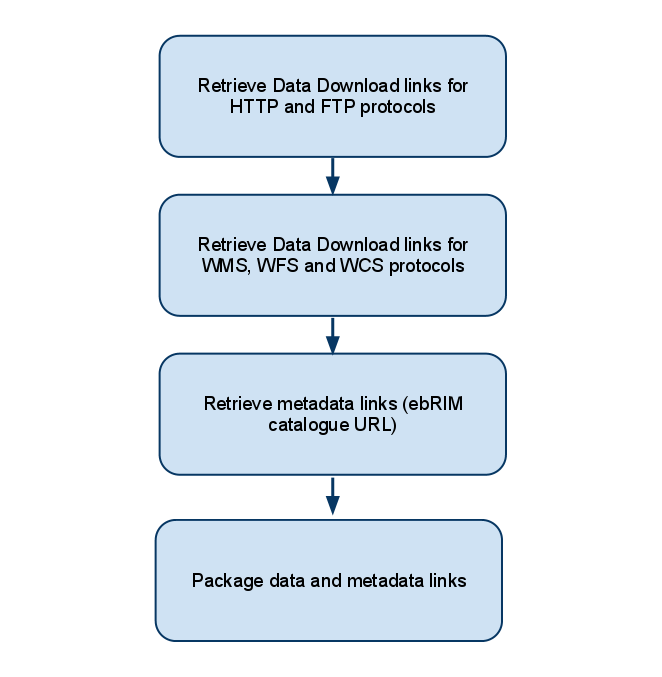

Retrieve data and metadata links
The retrieve operation allows the client to retrieve a complete set of links related to data and metadata and their status.

The retrieve task is composed by several subtasks which retrieve all required data from an internal database. The result is given to the client synchronously.
Each subtask retrieve part of the link set and add it to the response message. At each step, one or more links may be found, depending on the configuration and on the store operation invocation which
stored data and metadata into the ARMS.